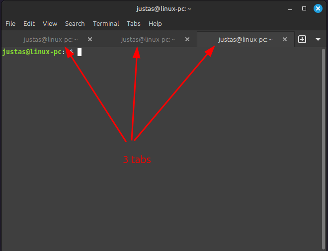
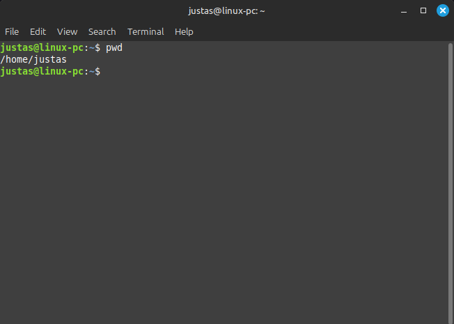
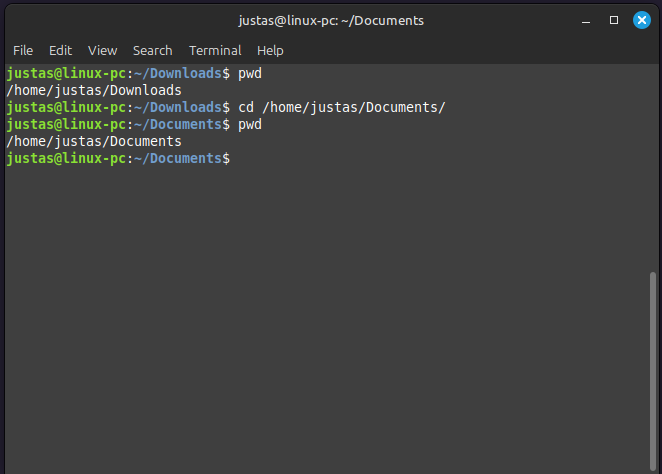
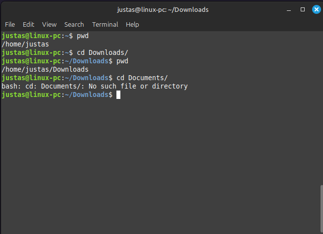
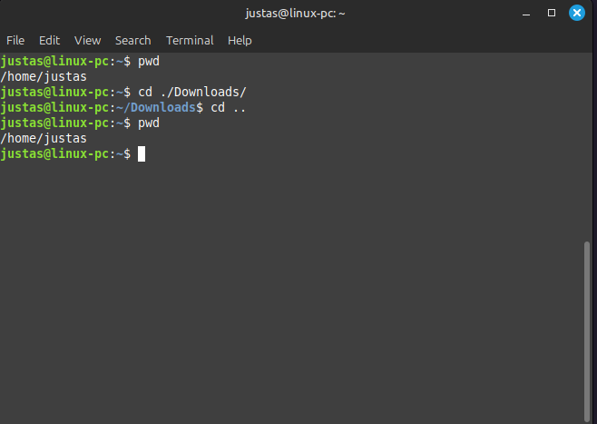
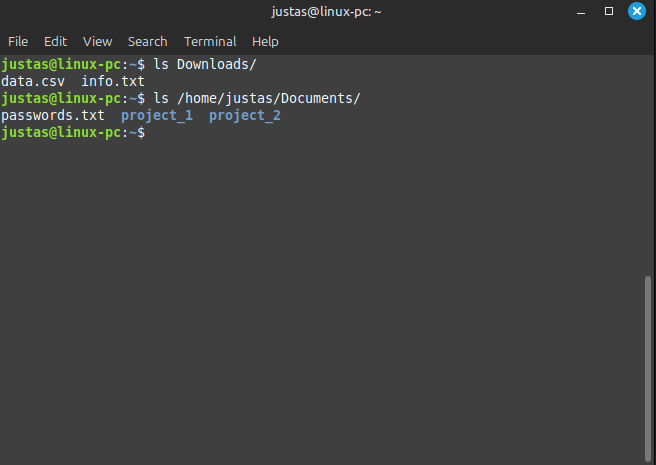
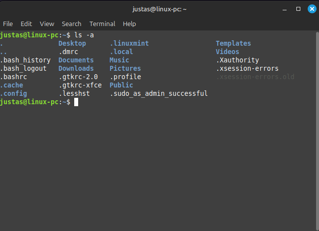
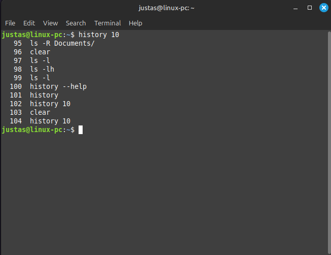

5 Terminalas ir Linux failų sistema
5.1 Shell ir Terminalas
Šiek tiek istorijos… Senais laikais kompiuteriai buvo milžiniški. Kad būtų patogiau (santykinai) su jais dirbti, žmonės prisėsdavo prie ekrano su klaviatūra, kuris buvo sujungtas su kompiuteriu. Ši instaliacija – ekranas su klaviatūra – buvo vadinama terminalu. Darbuotojai rašydavo komandas, o kompiuteris jas vykdydavo ir grąžindavo rezultatus. Tais laikais buvo rašomos komandos, nes kompiuteriai dar nebuvo tokie galingi ir neturėjo GUI (graphical user interface, lt - grafinės vartotojo sąsajos). Taigi, terminalas buvo CLI (command line interface, lt- komandų eilutės sąsaja), nes priimdavo komandas. Tai yra vartotojo sąsaja, kurioje komandos įvedamos (input) tekstu, o rezultatai rodomi kaip teksto išvestis (output). Skirtingai nuo GUI, kur naudojami vizualiniai elementai, tokie kaip langai ir mygtukai, CLI leidžia tiesiogiai rašyti instrukcijas, kurias vykdo sistema.
Kiek vėliau, atsiradus ekranams…
Šiais laikais, kai norime, kad kompiuteris vykdytų komandas, taip pat naudojamės terminalu, tik jau ne fiziniu, o program, kuri emuliuoja fizinį terminalą.
Programa, kuri priima ir vykdo komandas, bendrai vadinama Shell. Ji priima komandas, išverčia jas į kompiuterio suprantamą kalbą ir liepia kompiuteriui jas įvykdyti. Po to, gavusi rezultatus, ji juos parodo terminale. Yra keletas skirtingų Shell “kalbų” arba tipų. Populiariausi Shell tipai, tokie kaip Bash (Bourne Again Shell), yra standartinė kiekvienos Linux sistemos dalis. Zsh (Z Shell) yra standartinis Shell MacOS sistemose, tačiau jis vis labiau populiarėja ir tarp Linux vartotojų.
Shell programos leidžia automatizuoti įvairias užduotis ir vykdyti sudėtingas komandas. Be to, Shell turi programavimo kalbos savybių, leidžiančių rašyti skriptus – failus su komandomis, kurios vykdomos viena po kitos.
Taigi terminalas yra CLI programa, kuri leidžia pasiekti Shell sąsają. Jį galima įsivaizduoti kaip langą kompiuteryje, per kurį įvedi komandas ir matai jų rezultatus. Terminalo programos naudojamos įvairiose operacinėse sistemose, nes jos leidžia efektyviau valdyti sistemą nei daugelis grafinių vartotojo sąsajų. Naudodajantis terminalu, gali atlikti įvairias užduotis greičiau ir tiksliau.
Atidaryk terminalo programą ir įrašyk šią komandą. Ji parodys, kur yra Shell ir koks būtent Shell tipas naudojamas.
which $SHELLAtsakymas (output) parodo vykdomojo Shell failo vietą – Shell programą, kuri šiuo metu naudojama tavo terminale. Iš output taip pat gali matyti, koks tai Shell tipas. Šiuo atveju, tai Bash.
5.2 Iš ko susideda CLI komanda?
Atsidaryk terminalo programą. Štai ką turėtum pamatyti:

- Prompt
Terminale iškart matai prompt – tai teksto eilutė, kuri nurodo, kad sistema yra pasirengusi priimti komandą. Ši eilutė dažniausiai rodo informaciją apie dabartinę direktoriją, vartotojo vardą ar kitus naudingus duomenis. Pavyzdžiui:
justas@linux-pc:~$Čia rodoma: vartotojo vardas @ kompiuterio pavadinimas. Simbolis ~ nurodo aktyvią darbinę direktoriją (namų direktoriją), o $ reiškia, kad sistema laukia įvesties (todėl ir vadinama prompt – iššaukimas). Kas yra darbinė direktorija, sužinosime vėliau.
Štai pavyzdys, kai Shell yra užsiėmęs ir nėra pasirengęs priimti tavo komandos:
- Žymeklis (Cursor)
Mirksintis žymeklis (cursor) rodo, kad terminalas pasirengęs priimti kitą įvestį ir nurodo, kurioje vietoje eilutėje bus įrašas.
- Komanda (command)
Komanda (angl. command) yra specifinis nurodymas, kurį vartotojas įveda, kad būtų atliktas tam tikras veiksmas sistemoje. Komandos gali būti naudojamos įvairiems veiksmams atlikti, pvz., failų kopijavimui, direktorijų kūrimui ar informacijos rodymui. Pavyzdžiui, komanda ls rodo dabartinės direktorijos failus ir subdirektorijas:
lsKai kurios komandos turi subkomandas. Pavyzdžiui, apt yra komanda, atsakinga už programinės įrangos (angl. software) valdymą, tačiau ji naudojama su subkomandomis:
apt update:: Atnaujina prieinamų programų sąrašą.apt install: Instaliuoja nurodytą paketą.apt remove: Pašalina nurodytą paketą.apt upgrade: Atnaujina visus diegtus paketus į naujausias versijas
Kad bet kas negalėtų instaliuoti programų, ši komanda turi būti vykdoma su administratoriaus teisėmis, pasitelkiant komandą sudo. Todėl kartais naudojamos kelios komandos iš eilės:
sudo apt update
sudo apt install cowsay- Pasirinkimai ir argumentai (Option, Argument)
Pasirinkimas (angl. option) ir argumentas (angl. argument) yra papildomi parametrai, kurie gali būti pridėti prie komandos, siekiant tiksliau nurodyti, kaip komanda turėtų būti vykdoma.
Pasirinkimas (option): Pasirinkimas modifikuoja komandos elgesį. Jis dažnai pridedamas prie komandos su brūkšneliu (-) arba dvigubu brūkšneliu (--). Pavyzdžiui, naudojant ls -l, -l yra pasirinkimas, kuris rodo failų sąrašą ilgąja forma. Naudojant sutrumpintus pasirinkimus, naudojamas vienas brūkšnys -, o išrašant pilną pavadinimą – dvigubas brūkšnys --.
Argumentas (argument): Argumentas yra papildoma informacija, kurią komanda naudoja veikimui. Pvz., ls Documents nurodo, kad komanda ls turėtų parodyti direktorijos Documents turinį. Šiuo atveju Documents yra argumentas.

5.2.1 Praktika
- Identifikuok užklausą (prompt), komandą (command), pasirinkimą (option) ir argumentą (argumentą). Nepanikuok, jei nepažįsti pačių komandų.
main-user@linux-mint:~$ sudo apt install -y cowsay
main-user@linux-mint:~$ cd Downloads
main-user@linux-mint:~$ rm -rf test/
main-user@linux-mint:~$ ls -alh /home/user/Downloads
main-user@linux-mint:~$ mkdir -p /project/data- Surask būdą, kaip sukurti skirtukus (tabs) terminalo lange. Kartais yra labai patogu turėti kelis skirtingus terminalo skirtukus. Pavyzdžiui, viename galite stebėti kompiuterio temperatūrą, kitame valdyti ir paleisti programas, o trečiame - stebėti, ar sistema nefiksuoja kokių nors klaidų. Bet kaip atidaryti skirtukus? Koks yra klaviatūros trumpinys? Jei norėtumėte paleisti ne skirtuką, o atskirą langą, koks trumpinys tai padarytų?

- Susirask terminalo grafinius nustatymus ir pakeisk foną, teksto spalvą ir kitus stiliaus elementus. Rask tau patinkantį stilių. Nebijok eksperimentuoti!

- Nors dažniausiai žymeklis yra blyksintis kvadratėlis, surask, kaip jį pakeisti į
|?
5.3 Linux failų sistema
Terminai “direktorija”, “katalogas” ir “aplankas” dažnai vartojami kaip sinonimai ir paprastai reiškia tą patį – vietą failų sistemoje, kur gali būti saugomi failai ir kiti subkatalogai. Tačiau yra keletas kultūrinių ir kontekstinių niuansų:
Direktorija (angl. directory): Techninis terminas, dažniausiai vartojamas Unix/Linux bendruomenėje ir kitose techninėse aplinkose. Jis pabrėžia hierarchinę failų sistemos struktūrą.
Katalogas: Tai dar vienas techninis terminas, dažnai vartojamas kaip sinonimas direktorijai. Šis terminas paplitęs tiek techninėje, tiek kasdieninėje kalboje.
Aplankas (angl. folder): Terminas, dažniausiai naudojamas grafinėse vartotojo sąsajose (GUI), pavyzdžiui, Windows ir Mac OS. Nors jis iš esmės reiškia tą patį kaip direktorija ar katalogas, jis dažniau vartojamas GUI kontekste.
Čia aš naudosiu terminą „direktorija“, nes jis yra artimiausias angliškam „directory“. Tačiau kartais galiu panaudoti ir „aplanką“ ar „katalogą“, tad nenustebk.
5.3.1 sudo
Praeitame skyriuje aptarėme, kad tam tikroms komandoms vykdyti reikia naudoti sudo, t.y., eskaluoti (pakelti) savo vartotojo privilegijas iki administratoriaus (root) lygio. Tam reikia įvesti slaptažodį. Taip užtikrinamas saugumas, kad bet kas negalėtų vykdyti pavojingų veiksmų sistemoje.
Paprastas vartotojas (user) ir administratorius (root) Linux sistemoje turi skirtingas teises ir privilegijas:
user:
- Teisės: Turi ribotas teises, gali atlikti veiksmus tik savo namų direkorijoje (home directory) ir kitose direktorijose, kuriose turi suteiktas teises.
- Priėjimas: Negali atlikti sisteminės administracijos užduočių, pvz., negali įdiegti ar pašalinti programinės įrangos, keisti sisteminių failų ar atlikti daugumos konfigūracijos pakeitimų.
root
- Teisės: Turi pilną administracinę prieigą prie visos sistemos. Gali atlikti bet kokias užduotis, įskaitant sisteminių failų modifikavimą, vartotojų administravimą, programinės įrangos diegimą ir pašalinimą.
- Priėjimas: Gali atlikti bet kokias operacijas be apribojimų.
Paprastas vartotojas, vykdydamas sudo, gali laikinai gauti root teises, pvz.:
sudo apt install <programa>Perėjimas iš paprasto vartotojo į root yra galimas tik tiems vartotojams, kurie yra įtraukti į sudo grupę. Instaliuojant Linux, pirmasis vartotojas automatiškai pridedamas prie šios grupės, tačiau vėliau sukurti vartotojai gali būti pridėti į sudo grupę pagal poreikį.
5.3.2 root direktorija
Windows operacinėje sistemoje turbūt matei diskus, pažymėtus raidėmis, pavyzdžiui, C:, D:, E:. Tai nereiškia, kad kompiuteryje yra keli fiziniai kietieji diskai. Dažniausiai tai yra vienas kietasis diskas, padalytas į logines dalis.
Pavyzdžiui, C: diske paprastai saugomi Windows failai, o vartotojai dažnai naudoja kitą diską failams saugoti. Šie „diskai“ yra visiškai atskirti vienas nuo kito.
Linux sistemoje viskas veikia šiek tiek kitaip. Net jei kompiuteryje būtų keli fiziniai diskai, jie gali būti sujungti į vieną loginę talpą (angl. logical volume) ir „pakišti“ po root direktorija, kuri žymima /.
Root direktorija yra failų sistemos viršūnė, žymima /. Visi kiti failai ir direktorijos yra šios šakninės direktorijos pavaldiniai. Tai atitinka Windows C: diską.

{kind=link}
Čia rasi daug subdirektorijų. Svarbiausios iš jų:
- /root: Root vartotojo (administratoriaus) namų direktorija.
- /etc: Konfigūracijos failai, kurie kontroliuoja įvairių programų paleidimą ir veikimą.
- /home: Paprastų vartotojų namų direktorijos, pvz., /home/justas/, /home/ruprecht/.
- /mnt: Laikina vieta prijungtoms laikmenoms, tokioms kaip kietieji diskai ar tinklo diskai.
- /media: Katalogas, kuriame pritvirtinami USB, CD ar DVD įrenginiai.
- /bin: Sisteminiai vykdomieji failai, pvz.,
ls,cp,mv. - /lib: Bibliotekos, būtinos sisteminėms programoms ir komandų vykdymui.
Kai atidarai failų naršyklę (Linux Mint tai programa Nemo), tavo namų direktorija bus po /home/vartotojas/. Štai kaip atrodytų naršy
/
└── home
├── user nameVisada gali pasitikrinti savo buvimo vietą, paspaudžiant ant „Toggle Location Entry“:
5.3.3 Praktika
Atsidaryk excalidraw naršyklėje ir nupiešk
/,/home/,/media/struktūros diagramą. Įsivaizduok, kad kompiuteryje yra trys vartotojai:justas,ruprechtasirslibinas. Nupiešk jų namų direktorijas.Įkišk USB laikmeną į kompiuterį, atidaryk failų naršyklę (Nemo). Turėtum pamatyti kažką panašaus. Paspausk ant USB laikmenos, tada spustelėk „Toggle Location Entry“ ir identifikuok, kurioje failų sistemos vietoje yra USB laikmena. Pridėk tai prie diagramos, kurią piešei.
5.4 Keliavimas failų sistema
Jau šiek tiek susipažinai su Linux failų sistemos struktūra. Kai atsidarai failų naršyklę (Nemo), matai šias direktorijas:
Direktorijų medyje tai atrodytų taip:
/
└── home
├── justas
│ ├── Desktop
│ ├── Documents
│ ├── Downloads
│ ├── Music
│ ├── Pictures
│ ├── Public
│ ├── Templates
│ └── VideosŠiame skyriuje išmoksi, kaip sužinoti, kur esi, su komanda pwd, kaip pakeisti direktoriją su cd ir kaip atspausdinti failų bei direktorijų sąrašą su ls.
Tačiau prieš einant prie pačių komandų, tau dar reikis susipažinti su vienu svarbiu konceptu - absoliučiu ir relatyviu adresu (arba keliu, nes angliškai - path).
5.4.1 Absoliutus kelias
Absoliutus kelias (angl. absolute path) yra pilnas kelias nuo šaknies direktorijos (/) iki konkretaus failo ar katalogo. Jis visada nurodo tą pačią vietą, nepriklausomai nuo to, kur esi šiuo metu.
Pavyzdžiui, šis kelias nurodo visą maršrutą nuo / per /home/, vartotojo namų direktoriją /justas/iki subdirektorijos Documents, kurioje yra failas data.csv:
/home/justas/Documents/data.csv5.4.2 Relatyvus kelias
Relatyvus kelias (angl. relative path) yra nurodomas atsižvelgiant į dabartinę darbinę direktoriją. Jis neturi pradinio /, todėl priklauso nuo to, kur esi.
Jeigu šiuo metu esi direktorijoje/home/justas, relatyvus kelias į failą data.csv subdirektorijoje Documents būtų:
Documents/data.csvKartais gali pamatyti relatyvų kelią su . (tašku), kuris reiškia “esama direktorija”. Taigi šis relatyvus kelias irgi tinka:
./Documents/data.csv5.4.3 ~
Vartotojų vardai Linux sistemoje gali skirtis, pvz., justas, ruprechtas ir t.t. Tarkime, rašai skriptą, kuris turi veikti vartotojo Downloads direktorijoje. Tu negali žinoti vartotojo vardo, todėl naudoti absoliutų kelią /home/justas/Downloads būtų nepatogu.
Bet ir relatyvus kelias ./Downloads gali sukelti problemų, nes skriptas gali būti paleistas ne iš vartotojo namų direktorijos, o tiesiai iš Downloads direktorijos, kas sukurtų absurdišką Downloads/Downloads.
/
└── home
├── justas
│ ├── Downloads
│ ├── ./DownloadsŠtai čia gelbsti ~. Shell atpažįsta ~ kaip nuorodą į dabartinio vartotojo namų direktoriją.
Taigi relatyvus kelias~/Downloads yra automatiškai keičiamas į /home/justas/Downloads, jeigu vartotojas yra justas, arba į /home/ruprecht/Downloads, jeigu vartotojo vardas yra ruprecht.
Kada naudoti ką?
Absoliutūs keliai dažniausiai naudojami skriptuose, konfigūracijų failuose, dokumentacijoje ir sisteminiuose veiksmuose.
Relatyvūs keliai labiau tinka kasdieniam darbui su failais, naršymui ir interaktyviam scenarijų vykdymui.
5.4.4 pwd
Jau kelis kartus minėjome darbinę direktoriją. Kas tai? Darbinė direktorija yra ta direktorija, kurioje šiuo metu “gyvena” shell. Įsijunk terminalą, įrašyk komandą pwd ir paspausk Enter, kad ją įvykdytum. Komanda pwd (angl. “print working directory”) parodo dabartinės darbinės direktorijos pilną kelią (path).
pwd
Šiuo atveju darbinė direktorija yra /home/justas.
Taigi, iš mano darbinės direktorijos, Downloads subdirektorijoje esantis failas data.csv man būtų pasiekiamas Downloads/data.csv keliu. Tačiau aš galiu pakeisti savo darbinę direktoriją pereidamas į kitas direktorijas su komanda cd.
5.4.5 cd
Komanda cd (angl. change directory) naudojama pereiti iš vienos direktorijos į kitą. Kai pereini į kitą direktoriją, pasikeičia ir darbinė direktorija, kartais dar vadinama aktyvia direktorija (angl. current directory).
Įvedęs komandą:
cd DownloadsAš pereinu į Downloads subdirektoriją. Kadangi Downloads yra mano namų direktorijoje, galėjau pasinaudoti relatyviu keliu. Atkreipk dėmesį, kaip pasikeičia terminalo prompt: vietoj ~ (jau žinai, ką jis reiškia), dabar matosi ~/Downloads.
Dabar failas Downloads/data.csv tampa pasiekiamas tiesiog kaip data.csv.
Komandai cd gali duoti absoliutų kelią, ir tada cd pakeis darbinę direktoriją, nesvarbu, kur tuo metu esi:
cd /home/justas/DocumentsŠi komanda perkelia mane iš Downloads tiesiai į Documents.

Tačiau cd komandai gali nurodyti ir relatyvų kelią, svarbu, kad jis egzistuotų. Pavyzdžiui, aš galiu pereiti iš savo namų direktorijos į Downloads su cd Downloads/, tačiau negaliu pereiti į Documents, jei esu Downloads direktorijoje, nes Documents ten nėra. Tada gaunu klaidos pranešimą: bash: cd: Documents/: No such file or directory.

Priminimui:
/
└── home
├── justas
│ ├── Desktop
│ ├── Documents
│ ├── Downloads
│ ├── Music
│ ├── Pictures
│ ├── Public
│ ├── Templates
│ └── VideosKaip jau minėjau, taškas . reiškia “čia”. Pvz., iš namų direktorijos galėčiau pereiti į Downloads su cd ./Downloads.
Yra ir .., du taškai, kurie reiškia direktoriją esančią aukščiau už dabartinę (.) direktoriją. Ji dažnai vadinama parent directory. Taigi, su komanda cd ./Downloads nuėjęs į Downloads, galiu vėl pakilti į viršų su cd ...

.. taip pat gali būti naudojama pereiti relatyviai, pvz., iš Downloads į Documents. Būdamas Downloads direktorijoje, galiu naudoti komandą cd ../Documents, kad pakilčiau vienu lygiu aukščiau ir tada pereičiau į Documents.
.. gali būti naudojama ir kelis kartus iš eilės, pvz., iš Downloads galima pakilti į home, naudojant cd ../...
Priminimui
/
└── home
├── justas
│ ├── Desktop
│ ├── Documents
│ ├── DownloadsKomandą cd gali naudoti ir be jokių argumentų, kad grįžtum į namų direktoriją, pvz., cd arba su cd ~.

Pereiti į ankstesnę direktoriją gali su komanda cd -. Tarkime, buvau home/justas/Downloads, perėjau į home/justas/Documents, bet supratau, kad padariau klaidą - norėčiau likti Downloads. Galiu grįžti atgal su cd -.
Sveikinu! Dabar jau moki naršyti po direktorijas naudojant terminalą. Nors tai gali atrodyti sudėtinga iš pradžių, laikui bėgant pastebėsi, kad paleisti terminalą su klaviatūros trumpiniu Ctrl-Alt-T ir, naudojant TAB greitesniam komandų ir argumentų užpildymui, greitai nueiti į norimą direktoriją bei redaguoti failus bus daug greičiau nei tai daryti su grafinės sąsajos (GUI) įrankiais.
Pvz., iš savo namų direktorijos pereinu į Documents, tada į project, tada į documentation, atspausdinu failų sąrašą su ls ir redaguoju failą su nano programa.
Bet kas ta ls komanda?
5.4.6 ls
Komanda ls (angl. list storage) naudojama norint peržiūrėti failų ir katalogų sąrašą dabartinėje arba nurodytoje direktorijoje. Tai viena dažniausiai naudojamų komandų, naviguojant failų sistemoje.
Jei atidarytum failų naršyklę, pavyzdžiui, Nemo, matytum kažką panašaus:
Lygiai taip pat failų sąrašą gali parodyti ir terminale, įvedant komandą ls:

Komanda ls gali priimti argumentą – direktorijos kelią, kurio turinį norima parodyti. Šis kelias gali būti tiek absoliutus, tiek relatyvus. Pavyzdžiui, ls /home/justas/Downloads parodys Downloads katalogo turinį. Atkreipk dėmesį į spalvas: failai yra balti, o katalogai – mėlyni.

Kartais pamatyti tik failų pavadinimus gali būti nepakankama. Galbūt norisi matyti daugiau informacijos, pvz., kada failai sukurti, kas turi teises juos valdyti ar matyti, ar kam jie priklauso.
Kaip ir failų naršyklėje, kur gali perjungti į “List View”, terminale gali naudoti komandos ls nustatymą -l, kuris išveda išsamų (ilgą) failų sąrašą su papildoma informacija: teisėmis, savininku, dydžiu ir paskutinio modifikavimo data.
Pavyzdžiui ką tokią eilutė reikšia, paaikšinsiu netrukus.
drwxr-xr-x 2 justas justas 4096 Sep 15 10:19 DesktopNorint pamatyti visus failus, įskaitant paslėptus (failai, kurių pavadinimai prasideda tašku), gali naudoti -a arba --all:

Nemo failų naršyklėje taip pat gali pamatyti paslėptus failus, jei aktyvuosi šią funkciją.
Kai paleidi ls -l, failų dydžiai nurodomi baitais. Kartais naudingiau matyti dydžius, išreikštus žmonėms suprantamesniais vienetais, kaip kilobaitai (1000 baitų), megabaitai (1000 kilobaitų) ir t.t. Tam gali naudoti nustatymą --human-readable arba trumpinį -h - ls -lh
Šios abi komandos ls -all -l --human-readable ir ls -alh yra teisingos, tačiau dažniau naudojamas trumpesnis variantas. Panaudojant ls -alh, galėsi matyti paslėptus failus, o failų dydžiai bus išreikšti žmonėms labiau suprantama forma.

Kartais gali prireikti rekursyvaus katalogo turinio peržiūros. Komanda ls -R arba ls --recursive parodys ne tik pasirinktos direktorijos, bet ir visų jos subdirektorijų turinį.

5.4.7 Teisės ir tipai
Ši eilutė rodo failų arba direktorijų sąrašą su jų detalėmis:
Pirmas stulpelis parodo, kokio tipo failas ar direktorija tai yra, ir kokias teises turi skirtingi vartotojai.
Pirmoji raidė gali būti:
d– Direktorija (directory)l– Simbolinė nuoroda (link)-– Įprastas failas (regular file)
Linux sistemoje yra trys vartotojų tipai:
- Savininkas – vartotojas, kuris sukūrė failą arba direktoriją. Šiuo atveju vartotojas yra
justas. - Grupė – Grupė, kuriai priklauso failo savininkas. Dažnai grupės vardas yra tas pats kaip ir savininko vartotojo vardas, pvz.,
justas. Vartotojai gali priklausyti kelioms grupėms, tačiau kiekvienas failas ir direktorija turi pagrindinę grupę, kuri turi tam tikras teises į tą failą arba direktoriją. Pameni minėjom, kad ne visi vartotojai priklauso sudo grupei? Čia panašiai, tik kita grupė. - Kiti (other) – Visi kiti vartotojai, kurie nėra nei savininkas, nei grupės nariai. Tai apima visus kitus sistemos vartotojus, kurie neturi specialių teisių šiam failui ar direktorijai.
Teisės nurodomos pirmame stulpelyje trimis tripletais: xxx-xxx-xxx (be brūkšnių).
r– Skaitymo teisė (read), leidžia matyti ir skaityti turinį.w– Rašymo teisė (write), leidžia perrašyti turinį.x– Vykdymo teisė (execute), leidžia vykdyti failą.
Pvz., teisės drwxr-xr-x:
d– Direktorija (directory)rwx– Savininko teisės: skaitymas (read), rašymas (write), vykdymas (execute)r-x– Grupės teisės: skaitymas (read), vykdymas (execute)r-x– Kitų vartotojų teisės: skaitymas (read), vykdymas (execute)2– Nuorodų skaičius į šią direktoriją. Tai apima nuorodą į pačią direktoriją ir bet kurias subdirektorijas. Pavyzdžiui, jei skaičius būtų4, tai reikštų, kad direktorijoje yra trys subdirektorijos (ir arba failai) ir viena pati direktorija.justas– Direktorijos savininko vartotojo vardas.justas– Direktorijos grupės vardas.4096– Direktorijos dydis baitais.Sep 15 10:19– Paskutinio direktorijos modifikavimo data ir laikas.Desktop– Direktorijos pavadinimas.
5.4.8 Pagalbinės funkcijos terminale
5.4.9 history
Komanda history (liet. „istorija“) naudojama norint parodyti visų anksčiau įvestų komandų sąrašą dabartinėje terminalo sesijoje. Tai suteikia patogų būdą sekti ir kartoti anksčiau vykdytas komandas.
Jei nori parodyti tik paskutines n komandų, gali naudoti history n. Pvz., parodyti paskutines 10 komandų history 10:

Kartoti konkrečią komandą pagal numerį galima įrašius ! ir komandos numerį. Pavyzdžiui, jei nori pakartoti komandą, kurios numeris yra 99:
history
!99Ištrinti komandų istoriją galima su history -c.
history -c
hisotry
5.4.10 clear
Komanda clear (liet. „valyti“) naudojama norint išvalyti terminalo ekraną, pašalinant visus anksčiau įvestus ir parodytus tekstinius duomenis. Tai palieka terminalą švarų ir patogesnį tolimesniam naudojimui. Svarbu: ši komanda neištrina terminalo istorijos (history); ji tik paslenka visą tekstą į viršų, už dabartinio vaizdo ribų.
clear5.4.11 Ctrl-L
Alternatyva komandos clear naudojimui yra klaviatūros trumpinys Ctrl-L. Šis trumpinys atlieka tą pačią funkciją kaip ir komanda clear, tačiau jis yra greitesnis ir patogesnis, ypač kai dirbi terminale ir nori greitai išvalyti ekraną. Naudojant Ctrl-L, terminalo ekranas bus išvalytas, tačiau terminalo istorija liks nepakitusi.
5.4.13 Ctrl-C ir Escape
Naudojant komandinę eilutę, kartais terminalas gali „pakibti“. Pvz., jei pradėsi rašyti echo su kabutėmis, bet pamirši uždaryti kabutes, terminalas lauks, kol užbaigsi komandą.
Tokiais atvejais terminalas gali atrodyti „pakibęs“. Pabandyk paleisti šias komandas po vieną:
$ echo "hello
$ grep foobar
$ yes
$ tail
$ catNorėdamas nutraukti „pakibusią“ komandą, naudok Ctrl-C. Šis derinys siunčia kontrolės signalą terminalui ir nutraukia vykdomą procesą. Pastaba: Ctrl-C čia reiškia „Cancel“ (nutraukti).
Kartais terminale gali pamatyti ^C, rodančią, kad buvo paspaustas Ctrl-C. Jei Ctrl-C neveikia, pabandyk ESC klavišą.
Verta žinoti: kad kartais vietoj Ctrl- notacijos, gali sutikti ^ notaciją, pvz., ^C, ^O, ^X.
5.4.14 Praktika
Kai paleidi terminalą, kurioje direktorijoje esi? Pakeisk direktoriją į
Downloads. Uždaryk terminalą ir paleisk jį iš naujo. Kur dabar esi?Iš
/home/user/direktorijos pereik į Downloads ir atspausdink direktorijos turinį naudojantls. Užduotis:- Failų dydis būtų suprantamas žmonėms.
- Sąrašas būtų pateikiamas viename stulpelyje.
Iš
/home/user/direktorijos pereik įDocuments. Iš ten atspausdink failų sąrašąDownloads(!!!) direktorijoje- naudojant absoliutų kelią
- naudojant relatyvų kelią
Pagalbai:
Home Directory/
├── Desktop/
├── Documents/
├── Downloads/
├── Music/
├── Pictures/
├── Public/
├── Templates/
└── Videos/Naudok
clear, kad išvalytum terminalą, tada su history surask tau patinkančią komandą ir pakartok ją naudojant!n.Vizualizuok vartotojų ir grupių santykius pagal šią lentelę. Naudok Excalidraw:
| Vartotojas | Sudo grupė | Grupė “namai” |
|---|---|---|
| root | Taip | Taip |
| justas | Taip | Taip |
| ruprechtas | Ne | Taip |
- Įsivaizduok, kad failas
/home/ruprechtas/info.txtturi tokias savybes:
-rwx----- 2 ruprechtas namai 4096 Sep 15 10:19 info.txtAr vartotojas justas, priklausantis grupei namai, galės atidaryti ir perrašyti šį failą? Kodėl?
Ką reikėtų pakeisti, kad vartotojas justas galėtų matyti ir perrašyti šį failą? Atsakyk teoriškai (nes dar nežinai komandų, kuriomis tai apdaryti).
Nukopijuok ir paleisk šią komandą terminale.
curl -s https://gist.githubusercontent.com/justasmundeikis/e61bb3ab5cf28686f74a50e436b06fe6/raw | bashŠi komanda parsisiųs ir įvykdys skriptą, kuris sukurs test direktoriją tavo/home/username/ direktorijoje.
Pasinaudok ls, atspausdink visus failus, esančius (sub-)direktorijose ir atsakyk į šiuos klausimus:
- Kiek yra subdirektorijų
testdirektorijoje? - Kiek iš viso suskaičiuoji failų? Suskaičiuok visus failus, esančius visose subdirektorijose.
- Kokio tipo failų (pvz., .txt, .csv) yra daugiausia? Kurioje direktorijoje?
5.5 Funkcijos
Visos skyriuje panaudotos funkcijos
| Funkcija | Aprašymas |
|---|---|
which |
Parodo vykdomojo failo vietą |
pwd |
Parodo dabartinės darbinės direktorijos pilną kelią |
cd |
Pakeičia dabartinę direktoriją (esamą vietą) terminale |
ls |
Rodo failų ir katalogų sąrašą direktorijoje |
sudo |
Leidžia vykdyti komandas su kitokio vartotojo teisėmis (dažniausiai root) |
history |
Rodo ankstesnių komandų istoriją |
clear |
Išvalo terminalo ekraną |
Ctrl-A |
Perkelia kursorių į eilutės pradžią |
Ctrl-E |
Perkelia kursorių į eilutės pabaigą |
Ctrl-U |
Ištrina viską į kairę nuo kursoriaus |
Ctrl-C |
Nutraukia vykdomą komandą terminale |
Ctrl-L |
Išvalo terminalo ekraną (panašu į clear) |
Shift-Ctrl-C |
Kopijuoja tekstą iš terminalo |
Shift-Ctrl-V |
Įkelia tekstą į terminalą |
Shift-Ctrl-T |
Sukuria naują terminalo skirtuką |
Shift-Ctrl-N |
Sukuria naują terminalo langą |